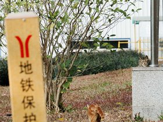

cat/20211209-P1000521.jpg
cat/20211209-P1000522.jpg
cat/20240410-DSC01778.jpg

cat/20240610-DSC04335.jpg
cat/20240610-DSC04359.jpg
cat/20240710-DSC05765.jpg
cat/20240715-DSC05982.jpg

cat/20240715-DSC05983.jpg

cat/20240721-DSC06098.jpg
cat/20240721-DSC06126.jpg
cat/20240721-DSC06132.jpg
cat/20240721-DSC06145.jpg
cat/20240721-DSC06150.jpg
cat/20240909-DSC07019.jpg

cat/20240930-DSC08419.jpg
cat/20241001-DSC08469.jpg
cat/20241001-DSC08535.jpg
cat/20241001-DSC08544-2.jpg
cat/20241112-DSC00112.jpg
cat/20241112-DSC00117.jpg
cat/20241130-DSC02611.jpg
cat/20241130-DSC02615.jpg

cat/20241201-DSC03042.jpg
cat/20241201-DSC03068.jpg
cat/20241201-DSC03086.jpg
cat/20241201-DSC03087.jpg

cat/20250103-DSC07469.jpg

cat/20250103-DSC07473.jpg
cat/20250105-DSC07870.jpg

cat/20250105-DSC07884.jpg
cat/20250117-DSC09050.jpg
cat/20250117-DSC09069.jpg
cat/20250130-DSC00045.jpg

cat/20250311-DSC01173.jpg
cat/20250402-DSC02772.jpg
cat/20250502-DSC04356.jpg

cat/20250512-DSC04918.jpg
cat/20250512-DSC04927.jpg
cat/20250608-DSC07121.jpg
cat/20250608-DSC07146.jpg